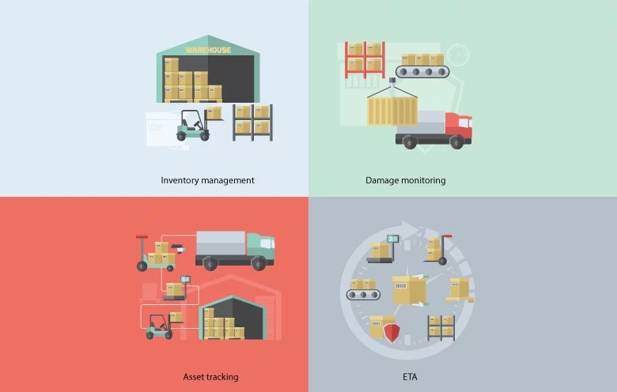

Designed a Power BI dashboard for real-time OTIF tracking, enabling city-wise and customer-specific performance analysis, reducing delivery inconsistencies, and saving 20% of manual effort.

This report provides an in-depth analysis of sales and availability trends across different distribution channels in the hospitality industry. It leverages Power BI to visualize key metrics, enabling stakeholders to make data-driven decisions to optimize channel performance..

The Student Database Management System is designed to streamline student data retrieval, record-keeping, and academic tracking for educational institutions. It enables efficient storage, retrieval, and management of student, course, professor, and enrollment details with minimal effort. The system ensures data integrity, security, and automation, reducing manual workload and improving accessibility.

This project focuses on data cleaning, transformation, and exploratory analysis using SQL on a Layoffs Dataset sourced from Kaggle. The dataset contains records of company layoffs, including total laid-off employees, industry, country, funding, and more. The goal is to ensure data accuracy, remove inconsistencies, and derive meaningful insights..

Developed an interactive Tableau dashboard to analyze EV market trends, adoption growth, and efficiency metrics. The project involved data cleaning, identifying BEV vs. PHEV distribution, mapping state-wise adoption, and evaluating top EV models based on CAFV eligibility. Insights support stakeholders in understanding market dynamics and shaping data-driven policy decisions.

This project involves an in-depth analysis of COVID-19 trends using Tableau for interactive visual representation. The goal was to track the pandemic's impact globally and uncover key insights into cases, deaths, and recovery trends over time..